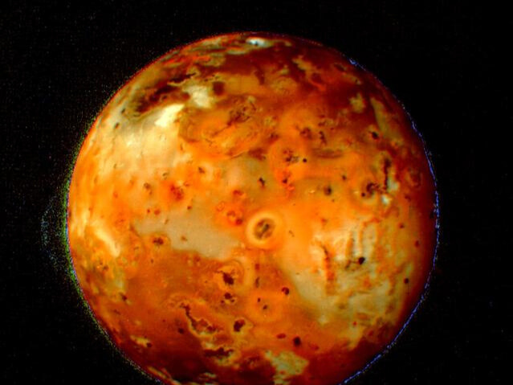
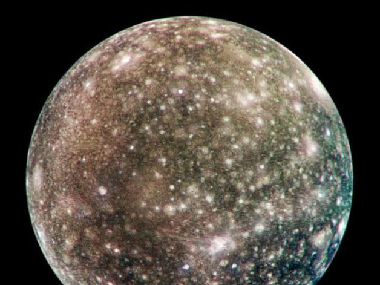
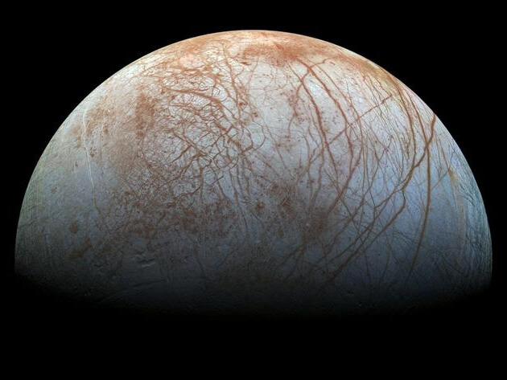

Volcanic Activity on Io via
NASA

Bright scars on a darker surface testify to a long history of impacts on Jupiter moon Callisto in this image of Callisto from NASA Galileo spacecraft.
NASA

The scene shows the stunning diversity of Europa's surface geology. Long, linear cracks and ridges crisscross the surface, interrupted by regions of disrupted terrain where the surface ice crust has been broken up and re-frozen into new patterns.
NASA
This enhanced image of the Jovian moon Ganymede was obtained by the JunoCam imager aboard NASA's Juno spacecraft during the mission's June 7, 2021, flyby of the icy moon on Juno's 34th pass close to Jupiter.
NASA